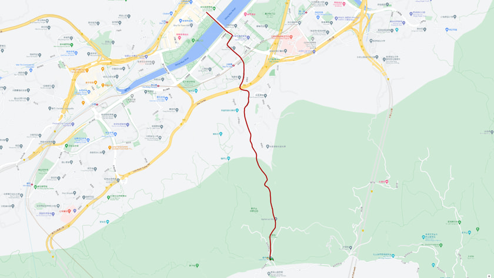
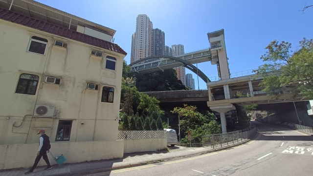
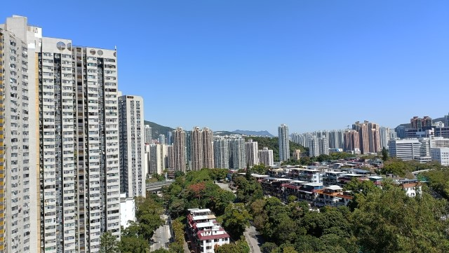
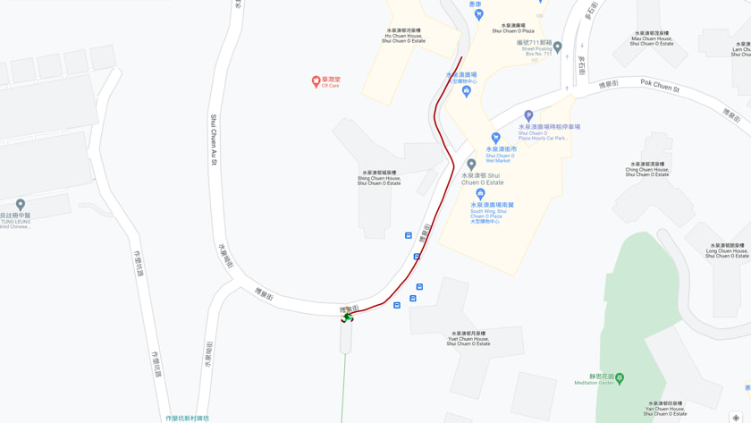
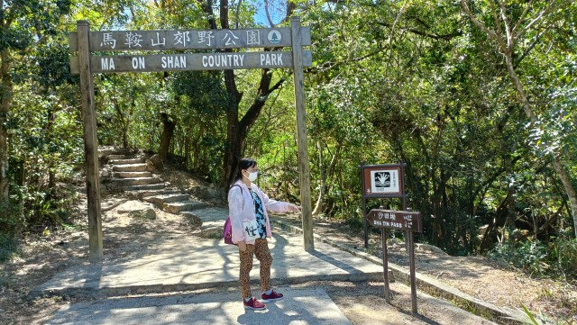
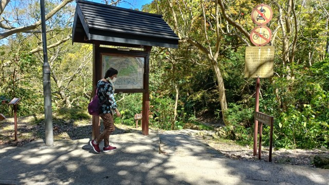
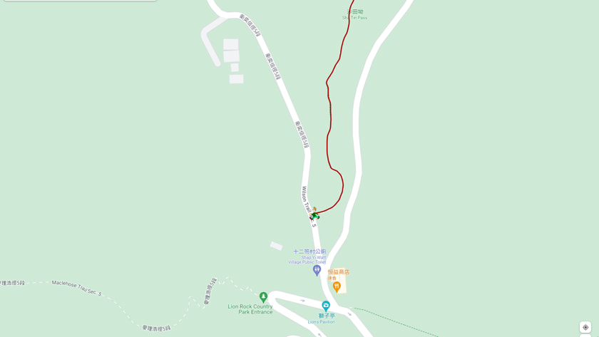
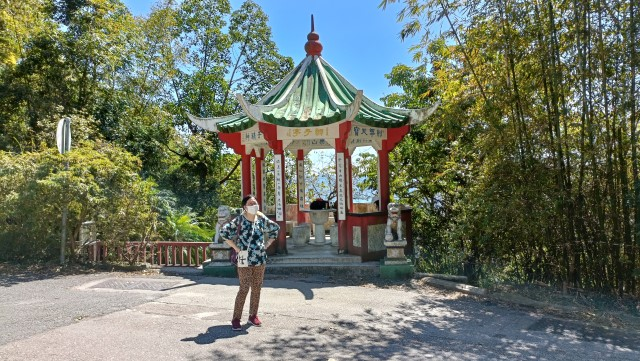
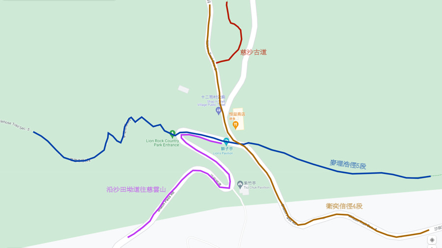
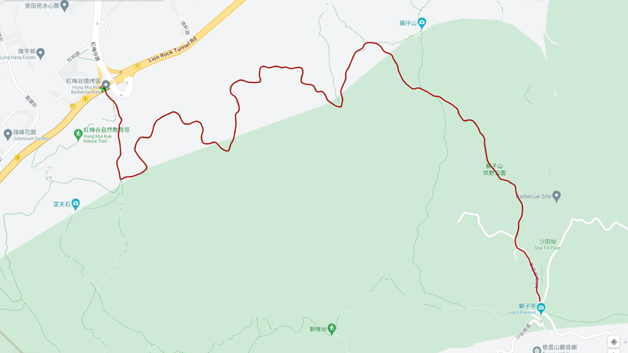

在2022年3月8日, 我和 Kathy 進行了一次輕鬆的登山遠足行程, 路線是從沙田市中心步行到博康邨, 然後穿越馬鞍山郊野公園到達海拔 300米高的沙田坳。
這條連接沙田與慈雲山之間的步道, 也稱為慈沙古道 (Tsz-Sha Ancient Trail), 據說在宋代已經存在, 是當時居民和商人往來新界東和九龍半島的主要通道。
我們在早上從沙田市中心出發, 在好運中心的海皇粥店吃完早餐, 才開始今天的遠足行程。
離開好運中心, 跨過一條行人天橋, 便來到沙田公園。
沙田公園環境優美, 在這裡流連了一會才離開。
接著循沙燕橋跨過城門河, 穿過一條行人隧道, 再往前走便來到沙角邨。
穿過沙角邨, 便來到港鐵沙田圍站。
如果想走少一些路, 可以乘港鐵到沙田圍站, 然後才開始慈沙古道的遠足行程。
我們接著沿沙田圍站旁的水泉坳街往上走。
按地圖所示, 只要沿水泉坳街一直往上走便可進入馬鞍山郊野公園。
一直往上走。
當走過博康邨及謝屋村後, 看見前面有一個高高的電梯, 通往山上的一個屋邨。心想那裡地勢高, 說不定是個很好的觀景台, 便決定先乘電梯往上面欣賞風景, 然後才繼續行程。
來到電梯入口, 才知道山上面的屋邨是水泉澳邨。
接著乘電梯到水泉澳邨。
步出電梯, 放眼遠望, 沙田市鎮就在腳下, 景色十分壯麗。
既然來到, 便順便往水泉澳廣場及水泉澳邨內參觀。
水泉澳邨環境優美, 有一個很大的商場; 交通方面, 有多條專線小巴和巴士路線, 是一個設施和配套很好的屋邨。
在水泉澳邨內閒逛了一會, 突然想起這裡應該也可以步行往馬鞍山郊野公園, 便沿馬路往下走。
不一會便來到馬鞍山郊野公園入口前的馬路。
哈哈~~~ 想不到因為乘電梯到水泉澳邨看風景, 無意中省卻了走上山 來到這裡的一段路, 現在舒服得多呢!
接著沿馬路一直往上走。約10分鐘便來馬鞍山郊野公園入口的牌坊, 很多地圖都將這裡劃定為「慈沙古道」沙田的起點。
從這裡開始, 只要沿慈沙古道一直往上走便可抵達海拔300米高的沙田坳, 途中沒有分叉路口, 肯定不會走錯路。
Okay! 開始正式登山啦!
慈沙古道的步道鋪設得很好, 坡度不大, 加上兩旁綠樹成蔭, 十分好走。
起初一段的慈沙古道設於觀音山河旁, 流水潺潺, 環境十分優美。
沿高高低低的石階一直往上走。
越走越高, 山下的沙田屋邨漸漸從樹林頂上閃出。
其實, 慈沙古道剛好位於馬鞍山郊野公園和獅子山郊野公園交界之間, 部分更位於獅子山郊野公園之內。所以, 步道右邊已經是獅子山郊野公園的範圍。
沿山路一直往上走。
從馬鞍山郊野公園入口牌坊計, 一直往上走了1小時20分, 終於登上了海拔300米高的沙田坳。這裡也是「慈沙古道」慈雲山的起點, 就這樣輕鬆的走完整條慈沙古道。
 這裡是多條行山遠足路線的交匯點, 所以聚集了很多行山人士。
迎面的道路是衛奕信徑第4段的終點站, 同時也是衛奕信徑第5段的起點。
如果在這裡轉右沿衛奕信徑第5段走, 會穿越獅子山 郊野公園到達山下的九龍水塘。
我們在衛奕信徑轉左走, 來到歷史悠久的恒益商店, 是行山人士的一個補給站。不過, 今天沒有開門營業。
再往前走便來到沙田坳道。
沙田坳道旁有一個獅子亭 。在我年輕時，曾經走過麥理浩徑幾次，每次經過這裡，都喜歡在亭中休息, 俯瞰山下壯麗景色, 但現在已被樹木所阻擋, 已無風景可看。
獅子亭好像是多條遠足路線的驛站。
第1: 麥理浩徑5段和衛奕信徑4段都經過這裡；
第2: 沿慈沙古道可以往山下的沙田；
第3: 沿沙田坳道往下走，約20分鐘便會抵達慈雲山。
我們原本計劃在恒益商店吃午餐，然後沿衛奕信徑4段走往望夫石，最後從紅梅谷離開。
這時約下午 2:00, 肚子已經餓得咕嚕咕嚕的叫, 沒有午餐吃, 很難繼續行程, 便決定今天的行程就到此為止。
接著掉頭循慈沙古道離開。 一直往下走, 約下午2:30便返回山下的馬鞍山郊野公園入口。
匆匆走到水泉澳廣場, 在2樓的一間日式餐廳吃了下午茶, 然後乘 288號巴士往沙田市中心。
就這樣結束了今天的慈沙古道登山行程。